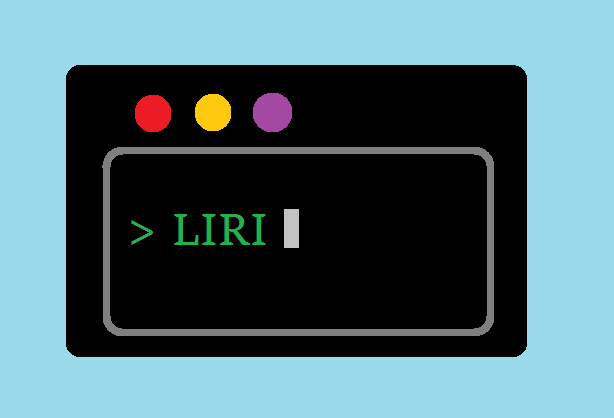
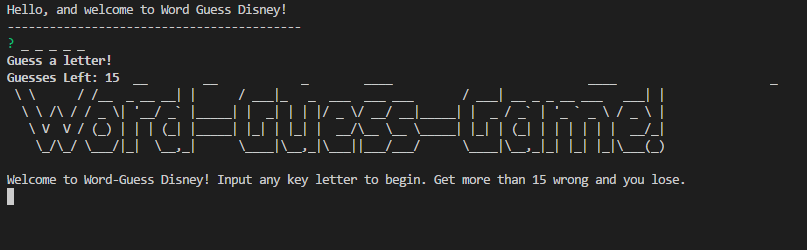

Portfolio

WOZ Word-Guess-Game
A Wizard of Oz themed Word-Guess-Game that's similar to Hangman.The app randomly picks
a letter, and the user has to guess which letter the app chose. The player is trying to guess the
entire randomly chosen word that's associated with the theme. When the player wins, the Wins counter
will increase and the game will start over. When the player loses, the Losses counter will increase
and the game will restart. The player's guesses and number of guesses remaining are displayed.
Technologies: JavaScript to manipulate the HTML & styled with CSS.

Fun-Facts Trivia Game
The Fun-Facts Trivia Game is based on a multiple choice form with random fun facts. The
player has a limited amount of time (1 minute and 30 seconds) to finish the quiz. The game ends when
the timer runs out and/or when the player submits their answers. When the game is over, the page
will reveal the number of questions the player answered correctly and incorrectly. The player can
only select one answer per question.
Technologies: JavaScript for the logic and jQuery to manipulate HTML. Styled
with CSS.

Giftastic Giphy Reactions
This app utilizes the GIPHY API to make a dynamic web page that populates with GIFs of your choice. The user adds their GIF
reaction into the text box. A button will populate and join the previously created buttons on the
screen. When the user clicks the GIF button, the page grabs 10 static, non-animated GIF images from
the GIPHY API and places them on the page. When the user clicks one of the still GIPHY images, the
GIF will animate. If the user clicks the GIF again, it will stop playing. Under each GIF, a rating
is displayed for the user.
Technologies: GIPHY API, JavaScript and jQuery to change the HTML of the
site. Styled with CSS.

Train-Scheduler
This train-scheduler app incorporates Firebase to host arrival and departure data. The app retrieves and manipulates the
information with Moment.js. The site will provide up-to-date information about various trains, their
arrival times, and how many minutes remain until they arrive at their station.
Technologies: Firebase, JavaScript, Moment.js and jQuery to change the HTML
of the site. Styled with CSS.

LIRI-Bot
LIRI-Bot is a command line node app that takes in parameters and gives you back data. This app is similar to iPhone's SIRI.
The difference is that SIRI is a Speech Interpretation and Recognition Interface, and LIRI is a Language
Interpretation and Recognition Interface.
Technologies: Node npm packages, Node.js, and JavaScript.

Constructor Word-Guess Game
This application is a word guess command-line game that uses constructor functions. The
aim of the Disney themed Hangman game is to guess the word provided in the terminal.
Technologies: JavaScript and Node.js

BAMAZON
This is an Amazon-like storefront that takes in orders from customers and updates the stock from the store’s inventory.
Technologies: MySQL, Node npm packages, Node.js, and JavaScript.

FriendFinder
This is a compatibility-based "FriendFinder" application -- basically a dating app. This full-stack site will take in results
from your users' surveys, then compare their answers with those from other users. The app will then
display the name and picture of the user with the best overall match.
Technologies: Express.js, JavaScript and Node.js

Eat-Da-Burger!
Eat-Da-Burger is a restaurant app that lets users input the names of burgers they’d like to eat. Whenever a user submits
a burger’s name, the app will display the burger on the left side of the page – waiting to be devoured.
Each burger in the waiting area also has a Devour it! button. When the user clicks it, the burger
will move to the right side of the page. The app will store every burger in a database, whether devoured
or not.
Technologies: Handlebars.js, Express.js, MySQL, Node npm packages, Node.js,
and JavaScript.

Book Nook
Book Nook uses the NYT Best Sellers API to give weekly updates on the hottest books! It lists the book
name, author, image and link to purchase for your library. The app provides a personal Inventory
for purchased books, and a Wish List for future purchases.
Technologies: Sequelize, MySQL, Express.js, JavaScript and Node.js